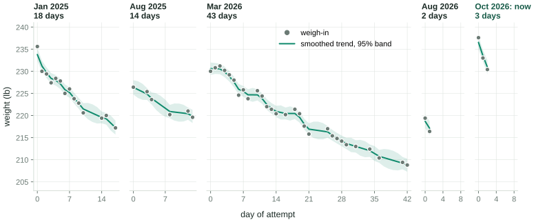
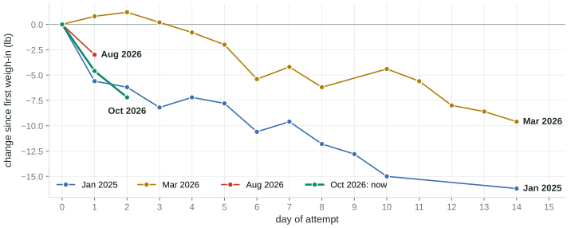
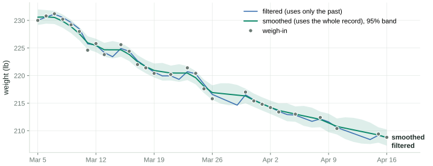
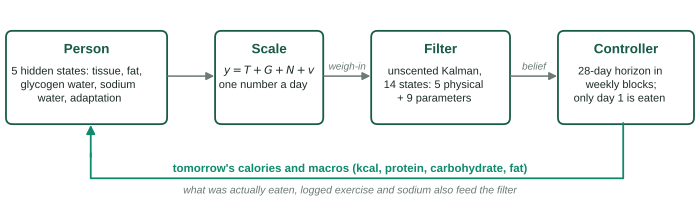
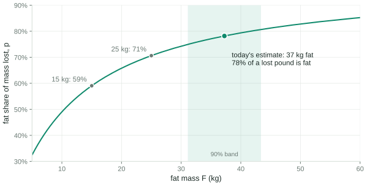
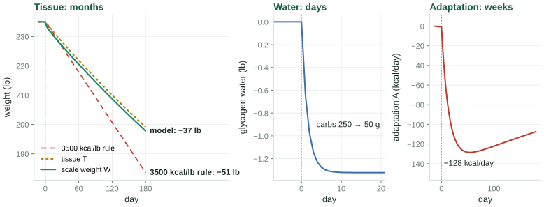
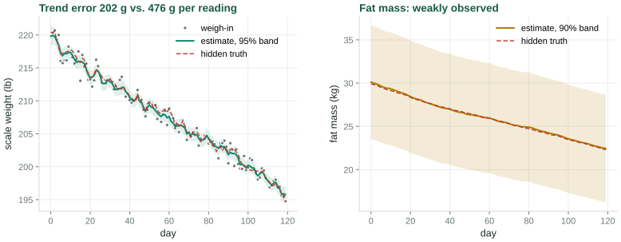
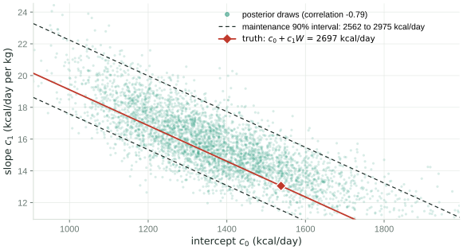
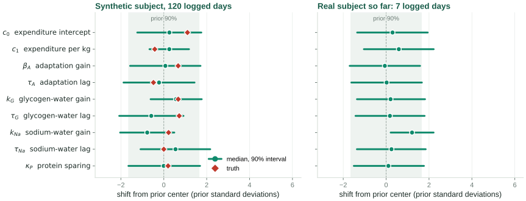
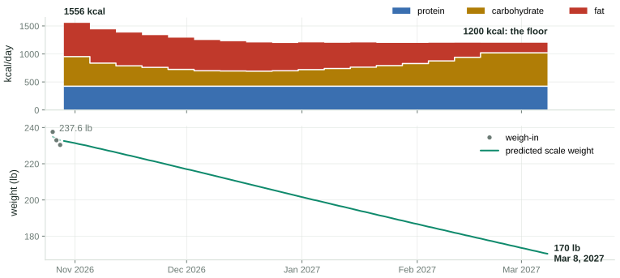

An energy-balance state-space model, a joint unscented Kalman filter, and a receding-horizon diet controller
Aykut C. Satici
2026-10-28
Twenty-one months on one bathroom scale

5 attemptsJan 2025 to now, months apart
54 weigh-insthe only measurement; no food log before Aug 2026
±0.9 lbscatter of one morning reading about the trend, fitted from this record
7 to 22 lblost on each of the three longer attempts, then regained before the next
A day-one drop is mostly water

The energy budget says under 1 lb Day 1 of the current attempt: 885 kcal eaten against roughly 3,540 kcal of expenditure, a deficit near 2,650 kcal. At about 7,800 kcal per kg of tissue that is 0.34 kg, or 0.75 lb.
The scale said 4.6 lb 237.6 → 233.0 lb overnight. The other 3.9 lb are glycogen and its bound water, gut contents, and fluid: real mass, but not the mass a diet is trying to move. A model that cannot tell the two apart will over-credit the first week and then report a “stall”.
The scale is a noisy sensor of a slow state

A morning reading scatters by 0.42 kg (0.9 lb) about the true trend. That is not the scale’s error, which is tens of grams; it is fluid, gut contents, and glycogen.
Filtered: the best estimate using only readings up to that day. This is what a controller can use. Smoothed: conditioned on the whole record, the right way to review history.
Missing days cost precision, not accuracy: the update is skipped, never filled in.
Why “3,500 kcal per pound” is wrong
Mass is a mixture A lost pound is part fat (about 9,400 kcal/kg) and part lean tissue (about 1,800 kcal/kg). The mix depends on how much fat you carry, so the energy per pound falls as the diet goes on.
Water moves first Glycogen is stored with about three times its mass in water. Cutting carbohydrate empties it in days: pounds on the scale, no tissue lost. Salt does the same in the other direction.
Expenditure adapts In a sustained deficit the body spends less than its lower mass alone explains, with a lag of a few weeks. The plateau is part of the dynamics, not a failure to comply.
Each of these is a state with its own time constant. The rest of this talk is a model with those states, a filter that estimates them from a scale, and a controller that plans food around them.
The model
Five states, nine parameters, one equation that matters most.
The loop

The person is a nonlinear system with five hidden states. The only sensor is a scale, read once a morning.
The filter estimates the states and the person’s metabolic parameters, jointly.
The controller plans 28 days ahead from that estimate, and the subject eats only the first day of the plan. Tomorrow it plans again from a new weigh-in.
Five states
State
Units
Meaning
Clock
\(T\)
kg
tissue: fat plus fat-free solids and their water. What a diet changes
months
\(F\)
kg
fat mass, a part of \(T\) (lean mass is \(T - F\))
months
\(G\)
kg
glycogen and bound water, deviation from the attempt’s mean
1 to 2 days
\(N\)
kg
sodium-associated water, deviation from the mean
about 1 day
\(A\)
kcal/day
adaptive thermogenesis; negative in a deficit
about 2 weeks
\[
\rho_{\text{eff}}\,\dot T = I - E - \rho_G\,\dot G,
\qquad
\dot F = p\,\dot T,
\qquad
y = T + G + N + v
\]
Energy eaten \(I\) minus energy spent \(E\) goes into tissue, except what is diverted into glycogen (\(\rho_G \approx 1{,}025\) kcal/kg of glycogen-water complex). \(\rho_{\text{eff}}\) is the energy density of the tissue being lost, \(p\) its fat fraction, and the scale reads \(y\): tissue plus both water compartments plus noise \(v\).
Expenditure, and the plateau as an ODE
\[
E = c_0 + c_1 W + \text{TEF} + X + A,
\qquad
\dot A = \frac{-\beta_A\,(E_{\text{base}} - I) - A}{\tau_A}
\]
\(c_0 + c_1 W\): resting and baseline expenditure, \(W\) total mass, TEF the thermic effect of food, \(X\) logged exercise, and \(E_{\text{base}} = E - A\).
Under a sustained deficit \(D = E_{\text{base}} - I\), adaptation settles at \(-\beta_A D\) with time constant \(\tau_A\). Priors: \(\beta_A \approx 0.15\), \(\tau_A \approx 14\) days.
Water: \(\dot G = (k_G\,\Delta C - G)/\tau_G\), with \(\Delta C\) carbohydrate relative to the attempt’s mean; the same form for sodium.
Remark. \(c_0\) also absorbs any constant bias in the food log, harmlessly. A bias that drifts is another matter: the model cannot tell it apart from adaptation.
What a lost pound is made of

Forbes found lean mass roughly logarithmic in fat mass across people. Differentiating gives the fat share of any change:
clipped to \([0.5, 0.98]\), with \(P_g\) grams of protein. Then \(\rho_{\text{eff}} = p\,\rho_F + (1-p)\,\rho_L\).
The leaner you get, the more of each pound is lean tissue, and the less energy each pound takes. The last stretch of a diet is harder than the first, structurally.
Three clocks

The model at its prior parameters, for a 235 lb subject who cuts 1,000 kcal/day and drops carbohydrate from 250 to 50 g on day 0. Water settles in days, adaptation in weeks, tissue in months. Over six months the model predicts 37 lb, against 51 lb for the rule of thumb.
The separation of timescales is what makes the states distinguishable at all. If adaptation were instantaneous it would be perfectly confounded with an error in \(c_0\); because it lags, a change in intake produces a brief transient in which the two differ.
From physiology to a filter
Discretize exactly Food logs are daily totals, so inputs are held for a day: an exact zero-order hold. The one-day map \(x_{k+1} = f(x_k, u_k)\) is RK4 with four substeps, checked against an adaptive Tsit5 solve to \(2.5\times10^{-7}\).
Observe linearly\(y_k = H x_k + v_k\) with \(H = (1\ 0\ 1\ 1\ 0)\). The measurement is linear in the state, so every measurement update is exact; only the time update is approximate.
Unlogged days are one unknown A day with no food log sets intake to current expenditure and adds process noise along a single direction, \(\propto (1, p, 0, 0, 0)/\rho_{\text{eff}}\). An unknown intake moves tissue and fat together; diagonal noise would let the filter learn composition from nothing.
Missing weigh-ins are skipped The update is skipped and the prediction carried forward. Never interpolate a missed weigh-in by hand, and never delete an awkward one: both corrupt the noise estimate everything else rests on.
Estimation
A weight-only history identifies noise. Weight and food together identify metabolism.
Phase 1: noise, from weight alone
The first four attempts have no food log, so they cannot say anything about metabolism. They can say how noisy a reading is and how fast the trend moves. A local linear trend model does exactly that:
with level \(\ell\) and daily slope \(b\). The three noise scales are fitted by maximum likelihood over all attempts at once, each with its own diffuse start.
The record
observation sd
0.42 kg (0.9 lb)
level innovation sd
0.40 kg/day
slope innovation sd
at its bound
steady-state gain
0.60
effective window
1.7 days
Gain 0.60: each weigh-in moves the estimate 60% of the way toward itself. A standard error is reported as “unidentified” when the optimum sits on a bound, rather than as a huge number.
Unscented, not extended Sigma points go through the exact nonlinear dynamics; \(\alpha = 0.3\), because the classic \(10^{-3}\) loses positive definiteness in 14 dimensions. Smoothing is Rauch-Tung-Striebel with the sigma-point cross-covariance.
Filter in a coordinate that cannot break\(\theta = c\,e^{s\eta}\) for positive quantities, a logistic map for \(\beta_A \in (0,1)\), affine for \(\kappa_P\). Centered and scaled so the prior is exactly\(\mathcal{N}(0, I)\), and no sigma point is ever a negative time constant.
Share metabolism, not state Each attempt restarts the physical states from its first weigh-in. The parameter posterior carries over as the next prior, relaxed toward the population prior with a two-year time constant across the gap.
The random walk keeps the filter from going deaf to later evidence. Its cost: intervals settle at a steady width instead of shrinking forever.
Validation: does it recover what it was given?

9 of 9true parameters inside their 90% intervals, truth set deliberately off the priors
202 gtrend error, from readings with 476 g of noise each
±7 kg90% band on fat mass, nearly unchanged after 120 days
Data generated by the model itself: this validates the inference machinery, and says nothing about whether the model resembles a person.
Maintenance is identified; its parts are not

Over the narrow range of weights in one dataset, raising \(c_0\) and lowering \(c_1\) leaves the fitted trajectory almost unchanged: correlation −0.79.
So each coefficient has a wide marginal, but maintenance\(c_0 + c_1 W\) at the current weight is tight: 2,562 to 2,975 kcal/day around a true 2,697.
The package reports maintenance by propagating the full covariance through the sum. A test asserts that interval is more than 20% narrower than treating the two as independent.
What the real data has said so far

With two logged days, eight of nine parameters sit on their priors. That is the correct answer: the weigh-in history pins down noise, and nothing about metabolism, so the filter reports its ignorance instead of inventing precision.
\(\tau_G\) has moved to about 21 days against a prior of 1.5. From one day of carbohydrate variation that is far more likely a flat likelihood ridge than a finding. If it is real, it will keep landing there as data accrues.
Control
Plan four weeks, eat one day, replan.
Receding horizon
Each morning the controller takes the filtered state, optimizes intake over a 28-day horizon, prescribes the first day, and discards the rest. Tomorrow’s weigh-in corrects whatever the model got wrong.
Decisions are held constant over weekly blocks:
Per block
Bounds
energy \(I\)
\([I_{\min}, I_{\max}]\), floor 1,200 kcal
protein per kg
\([P_{\min}, 3.0]\) g/kg
fat share of energy
\([0.15, 0.75]\)
Carbohydrate is the residual, \(C = (I - 4P_g - 9F_g)/4\), so the three are independent and the bounds are boxes for L-BFGS-B.
Remark. Certainty equivalence. The plan uses posterior-mean parameters and ignores their spread. That is cheap and optimistic: a maintenance estimate 200 kcal too high under-delivers, and the controller learns so only from the weigh-ins. Daily replanning keeps the error from compounding, but for the first two weeks the numbers are a starting point, not a prescription.
Not modeled: adherence. The plan is what would be optimal if followed exactly. People do not follow plans exactly.
end the horizon with less tissue. Linear, so it trades against the quadratic terms at an interior optimum instead of running to the floor
\(w_s\,\Delta I^2\)
do not change the target every day
\(w_e\,D^2\)
large deficits cost adherence, training and sleep, beyond any hard limit
\(w_c\,C^2\)
an optional preference for less carbohydrate, at any level
\(w_\phi(\phi - \phi^\star)^2\)
pull one macro’s energy share \(\phi\) toward a target (or break a flat tie)
\(\mu\,\Phi\)
hinge penalties on every safety limit, escalated until they hold
Deadline mode replaces the progress term with tracking: tissue against a straight path from today’s weight to the goal, scored at the end of the horizon, not at the goal itself.
Constrain tissue, not the scale
\[
-\Delta T_k \;\le\; \frac{\gamma\, T_k}{7} \qquad \text{for every day } k,
\qquad \gamma = 1.75\%/\text{week}
\]
Why tissue Cutting carbohydrate sheds a kilogram of glycogen water in days. On the scale that reads as 4 lb/week and trips any limit written on scale weight, though no tissue moved. A controller limited on the scale would refuse a sound plan, or raise calories in response to water. The objective scores \(T\) for the same reason: scored on \(W\), cutting carbohydrate alone would look like progress.
Constraints in fact, not intention The limit acts on the trajectory, so it is a hinge penalty. A soft penalty binds only by coincidence, so the solver checks the result, multiplies violated penalties by 12 and re-solves, warm-started, up to nine times. The CLI checks the final plan independently, and says so when a goal is out of reach:
target of 170 lb by 2027-01-31 is not reachable within your 1.8%/week limit; the earliest achievable date at that maximum rate is 2027-03-03
The plan being followed

1,773 kcaltomorrow: 106 g protein, 148 g carbohydrate, 84 g fat
2.5 to 3.0 lb/wkpredicted scale loss; tissue at 1.3% of what remains a week, rising to the 1.75% limit in March
1,370 kcalthe lowest day, in March; the 1,200 kcal floor never binds
Where things stand on day 3
233.0 lbfiltered trend, against a reading of 230.4: one low morning is not believed
3,187 kcalmaintenance \(c_0 + c_1W\); 90% interval 2,496 to 4,187, still the prior’s width
38 ± 7 kgfat mass, 90%; anchored by the prior and Forbes, not by data yet
−53 kcal/dayadaptation, three days into a large deficit
What to expect after four months of consistent data: a trend far better than the raw scale, a personal maintenance figure good to perhaps 5 to 8% with an honest interval, a usable split of scale movement into tissue and water, and a daily plan grounded in the subject’s data rather than a population formula.
What not to expect: a reliable body-composition measurement, a trustworthy adaptation estimate unless intake is deliberately varied, or any insight into whether the plan will be followed.
What the model cannot do
Drifting log bias looks like adaptation. If under-logging grows as the weeks go by, the model sees expenditure falling. Nothing in scale data separates the two.
Intake is self-reported, and expenditure is never measured, only inferred.
Unlogged days are treated as neutral. In reality they are more often the high days.
One subject, no replication. The physiology is population-level; the fit is to one person.
Gaussian everything, and a parameter random walk that is a convenient fiction.
Reported intervals are optimistic: they assume the model is right.
Certainty-equivalent control. A stochastic or minimax formulation is the obvious extension.
Residual diagnostics can show when the model is clearly wrong. They cannot show it is right.
Remark. Not medical advice. The safety limits are conservative defaults from general guidance, not anything specific to one person.
The software
wdm, a Python package on JAX, Equinox and Diffrax:
models as JAX pytrees; one-day RK4 map, Tsit5 reference
linear, extended and unscented filters, RTS smoothers
phase-1 maximum likelihood with L-BFGS-B and JAX gradients
receding-horizon solver with escalating penalties
exercise energy from a lifting routine
165 tests, and a 79-page technical report deriving all of it
The daily loop:
# 1. weigh in; close out yesterday's row# in observations.csv (weight, food,# exercise)# 2. plan from yesterday's statewdm plan observations.csv \--config subject.toml# 3. eat the "Today:" line
wdm filter and wdm fit-noise are diagnostics, not part of the daily loop. The plan’s horizon starts the day after the last row, so tomorrow’s row is never added before planning.
A scale is a sensor, a diet is an input, and a plateau is a time constant.
Estimate the state, respect the noise, plan ahead, act one day at a time, and let tomorrow’s weigh-in correct today’s plan.
Updated as the current attempt accrues data. Figures generated by the wdm package from the subject’s weigh-ins and food log.
The \(2n + 1 = 29\) points reproduce the mean and covariance exactly. Each is pushed through the one-day map, and the prediction is their weighted mean and covariance plus \(Q_k\). With \(\alpha = 10^{-3}\) and \(n = 14\), \(W_c^{(0)}\) is large and negative and the recombined covariance can lose positive definiteness; the package uses \(\alpha = 0.3\).
B2. The steady-state gain
Iterate the Riccati recursion of the local linear trend model to convergence and read off the Kalman gain \(K_\ell\) on the level. It answers the operational question directly: what fraction of the gap between this morning’s reading and yesterday’s estimate does the filter act on?
It is reported in place of the ratio \(\sigma_\ell/\sigma_v\), which reads as “no signal” whenever maximum likelihood drives \(\sigma_\ell \to 0\): an ordinary outcome meaning the trend moves by slope innovations rather than level jumps.
B3. Notation
Symbol
Meaning
\(T, F, G, N, A\)
tissue, fat, glycogen water, sodium water (kg); adaptation (kcal/day)
\(W = T + G + N\)
total mass, what the scale reads before noise \(v\)